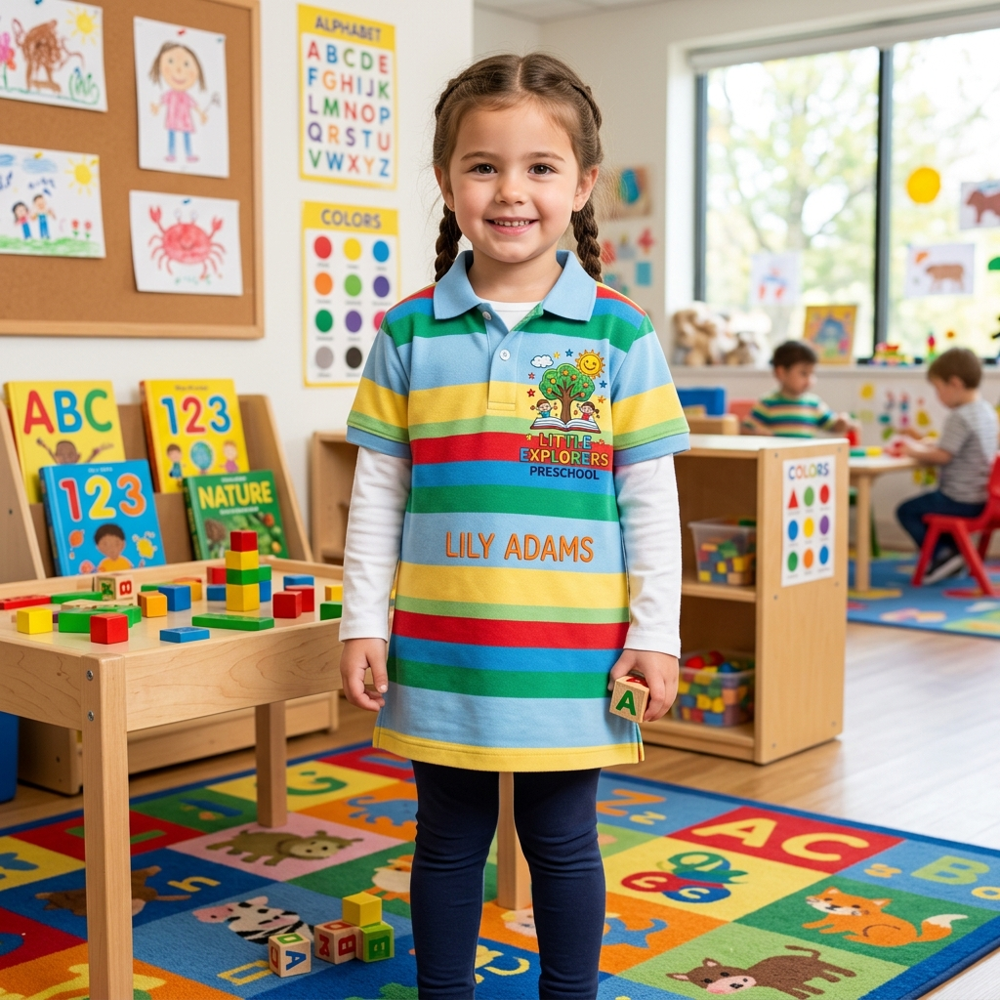

El primer día de kínder: ilusión, ternura… y mandiles perdidos
Mamá, papá — ¿recuerdas el primer día de kínder de tu pequeño? Esa mezcla de emoción, nervios y orgullo cuando lo dejaste en la puerta. Su mandilito blanco impecable, su mochila nueva, sus ojitos llenos de curiosidad.
Y luego, a las dos semanas: "Mami, no encuentro mi mandil."
Es la historia de todos los días en todos los kínderes del mundo — y en los del Istmo más todavía, porque aquí los niños son particularmente activos, juguetones y con una energía que no para. Treinta niños con el mismo mandil blanco, el mismo suéter azul y la misma chamarra. Es un caos adorable… pero un caos al fin.
La solución más sencilla y más bonita es una que las mamás del Istmo ya conocen: bordar el nombre de tu hijo en su ropa. No con plumón que se borra, no con una etiqueta que se despega, sino con un bordado de máquina que dura toda la etapa preescolar y que además hace que tu pequeño se sienta especial cada vez que vea su nombre en su mandil.
Bordados que No Pican: La Suavidad Es Nuestra Prioridad
Esta es la pregunta que toda mamá nos hace, y con toda razón: "¿El bordado no le va a picar a mi hijo?"
La respuesta es no — y aquí te explicamos por qué.
En Bortex sabemos que la piel de los niños pequeños es delicada y sensible. Por eso cuando bordamos prendas infantiles, ponemos especial cuidado en dos cosas:
- Hilos de poliéster premium: Los hilos que usamos son suaves al tacto, con un acabado sedoso que no raspa ni irrita. No son hilos rígidos ni ásperos — están diseñados para contacto directo con la piel.
- Entretela de calidad (backing): Debajo del bordado colocamos una entretela suave que actúa como barrera entre las puntadas y la piel del niño. Esta entretela queda lisa, sin bordes que piquen ni residuos que molesten.
- Recorte limpio del reverso: Después de bordar, recortamos cuidadosamente cualquier sobrante de entretela o hilo que pudiera causar incomodidad. El reverso queda plano, limpio y suave.
- Densidad calibrada para prendas infantiles: No usamos la misma densidad de puntada que en una chamarra de adulto. Para ropa de kínder, reducimos la densidad para que el bordado sea más flexible y se integre a la tela sin crear rigidez.
El resultado: un bordado que tu hijo puede usar todo el día sin sentir ninguna molestia. Ni cuando corre, ni cuando se acuesta a la hora de la siesta, ni cuando juega en el patio bajo el sol del Istmo.
"Un bordado para un niño de kínder no es igual que uno para un adulto. Requiere más cuidado, más suavidad y más cariño en cada detalle."
Batas y Mandiles Infantiles: Su Nombre y su Personaje Favorito
El mandil o bata blanca es la prenda emblemática del preescolar. Es lo que tu hijo usa todos los días, lo que se ensucia con pintura, plastilina y jugo de mango, y lo que inevitablemente termina confundido con el de otro compañerito.
Bordar el nombre resuelve el problema de forma permanente. Pero en Bortex no nos quedamos solo con el nombre — le damos a cada mandil un toque especial que hace que tu hijo lo reconozca al instante y lo quiera aún más:
🏷️ Nombre bordado con tipografía infantil
Bordamos el nombre de tu pequeño en letras grandes, claras y coloridas. Usamos tipografías redondeadas y amigables que los niños pueden reconocer fácilmente, incluso los que todavía están aprendiendo a leer.
- Nombre en el pecho, la espalda o la manga — donde tú lo prefieras.
- Colores vibrantes que el niño identifique como suyos.
- Opción de agregar el apellido o un apodo corto.
🦕 Personajes y diseños favoritos
¿A tu hijo le encantan los dinosaurios? ¿Tu hija es fan de las sirenas? ¿El pequeño no se quita la gorra de su superhéroe favorito? Podemos digitalizar y bordar su personaje o motivo favorito junto a su nombre en el mandil.
- Animales: dinosaurios, mariposas, gatitos, perritos, delfines.
- Motivos infantiles: estrellas, corazones, arcoíris, balones, flores.
- Personajes: Nos envías la imagen y nosotros la adaptamos para bordado.
Esto no solo ayuda a que tu hijo identifique su mandil entre los 30 iguales, sino que lo convierte en algo especial — un objeto que él siente como propio y que cuida con más atención.
🎒 Más prendas que bordamos para kínder
- Suéteres escolares: Con el escudo del jardín de niños y el nombre del alumno.
- Chamarras de pants: Escudo bordado que resiste el uso diario y las lavadas.
- Mochilas y loncheras: Bordamos el nombre para que no se pierdan en la escuela.
- Toallas y baberos: Para las estancias infantiles y guarderías, con nombre y diseño.
Para las Educadoras: Batas Personalizadas con Diseños Tiernos y Coloridos
Maestra, este artículo también es para usted. 💛
Sabemos que las educadoras del Istmo se entregan todos los días a sus alumnos con una dedicación que no tiene precio. Y su bata de trabajo es parte de esa entrega — es lo que los niños ven, lo que tocan cuando buscan un abrazo y lo que identifica a su maestra como alguien especial y cercano.
En Bortex ofrecemos un servicio dedicado para educadoras y personal de preescolar:
👩🏫 Batas de educadora bordadas
- Nombre de la maestra: Bordado en el pecho con tipografía elegante o divertida, según su estilo.
- Escudo del jardín de niños: Reproducción fiel del logo institucional en hilos de colores.
- Diseños especiales: Flores, mariposas, lápices, libros, letras del abecedario, números — motivos educativos y tiernos que los niños adoran.
- Frases inspiradoras: "Educadora con amor", "Maestra [nombre]", el lema de la escuela o una frase personalizada.
🎨 Digitalización de diseños únicos
Si usted tiene un diseño especial en mente — tal vez el logotipo de su salón, una mascota del grupo o un dibujo que hicieron sus alumnos — nosotros lo digitalizamos y lo convertimos en bordado. Es una forma hermosa de llevar la creatividad de su aula en su propia bata.
También bordamos para:
- Asistentes educativas y niñeras: Batas con nombre y diseño institucional.
- Personal de limpieza y cocina: Mandiles y filipinas con el nombre y logo de la institución.
- Directoras y coordinadoras: Prendas con un acabado más formal y elegante.
Acompañamos a los Más Pequeños en los Kínderes de Nuestra Región
En Bortex nos sentimos profundamente orgullosos de acompañar el inicio de la vida escolar de los niños del Istmo. Llevamos años trabajando con jardines de niños de Juchitán, Tehuantepec, Salina Cruz y las comunidades cercanas, y tenemos los escudos ponchados de las instituciones preescolares más queridas de la región, listos para bordar sin costos adicionales de digitalización.
🌈 Juchitán de Zaragoza
- Jardín de Niños "Cuitláhuac" — Una de las instituciones preescolares más emblemáticas y queridas de Juchitán. Generaciones de juchitecos iniciaron su camino educativo aquí, y en Bortex nos enorgullece bordar su escudo con la calidad que esta gran escuela merece. Si tu hijo estudia en el Cuitláhuac, ya tenemos su escudo listo para entrega rápida.
- Jardín de Niños "Rosario Castellanos"
- Jardín de Niños "Héroes de Chapultepec"
- Jardín de Niños "Federico Froebel"
- Estancias Infantiles y Guarderías locales
🌈 Tehuantepec, Salina Cruz y la Región
- Jardín de Niños "Margarita Maza de Juárez" — Tehuantepec / Ixtepec
- Jardín de Niños "Luz del Saber"
- Preescolares del sistema de Educación Indígena (Bilingües) — en las agencias y comunidades zapotecas y chontales del Istmo
- Centros de Asistencia Infantil Comunitarios (CAIC)
¿El kínder de tu hijo no aparece en la lista? No te preocupes. Si nos traes el mandil y una imagen del escudo, lo digitalizamos en 24–48 horas y lo guardamos permanentemente para futuras generaciones. 💛
Precios y Opciones para Mamás y Comités de Padres
Para mamás individuales
- Nombre bordado en mandil: Entrega en 1–2 días hábiles. Es rápido, económico y resuelve el problema de las confusiones de forma permanente.
- Nombre + diseño personalizado: 2–3 días hábiles (incluye digitalización del motivo).
- Suéter con escudo + nombre: 2–3 días hábiles.
Para comités de padres y escuelas
- Pedidos de 20–50 piezas: Precio grupal con descuento por cantidad.
- Pedidos de 50–100+ piezas: Precio de mayoreo + ponchado sin costo si ya tenemos el escudo.
- Tiempo de entrega: 1–3 semanas según cantidad. Recomendamos iniciar en julio para entrega en agosto.
Para educadoras
- Bata personalizada individual: Tu nombre, el escudo y un diseño especial. Entrega en 3–5 días.
- Paquete para equipo docente: Cotización especial para todas las maestras del plantel.
¿Cómo Hacer tu Pedido?
- Paso 1: Mándanos un WhatsApp con lo que necesitas — ya sea un nombre en el mandil de tu hijo o una bata completa para ti, maestra.
- Paso 2: Si ya tenemos el escudo de la escuela, te damos precio inmediato. Si no, nos envías la imagen y lo digitalizamos rápido.
- Paso 3: Si es para nombre individual, puedes traer el mandil o la prenda directo a nuestro taller en la Calle 2 de Abril #35.
- Paso 4: ¡Lo bordamos con todo el cariño y te lo entregamos listo!
🧸 ¿Tu pequeño entra al kínder?
Tráenos su mandil y le bordamos su nombre con hilos suaves que no pican. Y si eres educadora, cotiza tu bata personalizada con diseños tiernos y coloridos. ¡Nos encanta ser parte de esta etapa tan bonita!
Mandar WhatsApp Cotizar en línea